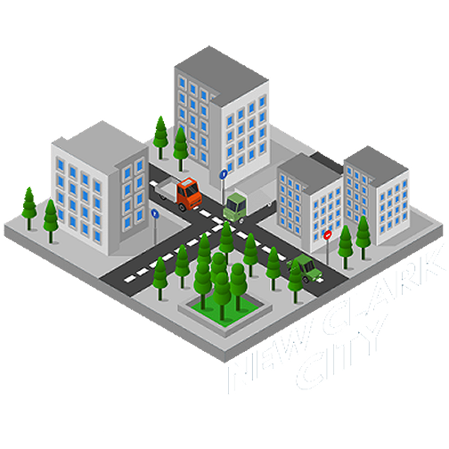
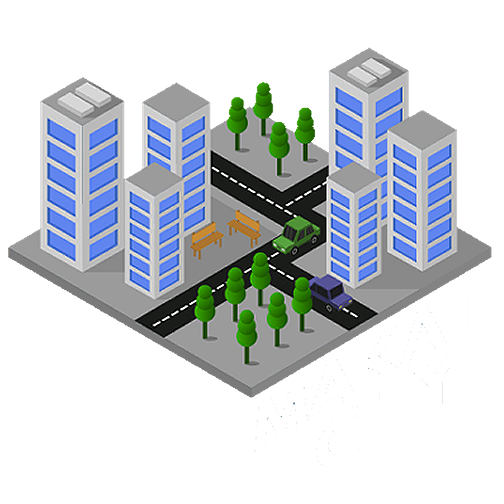
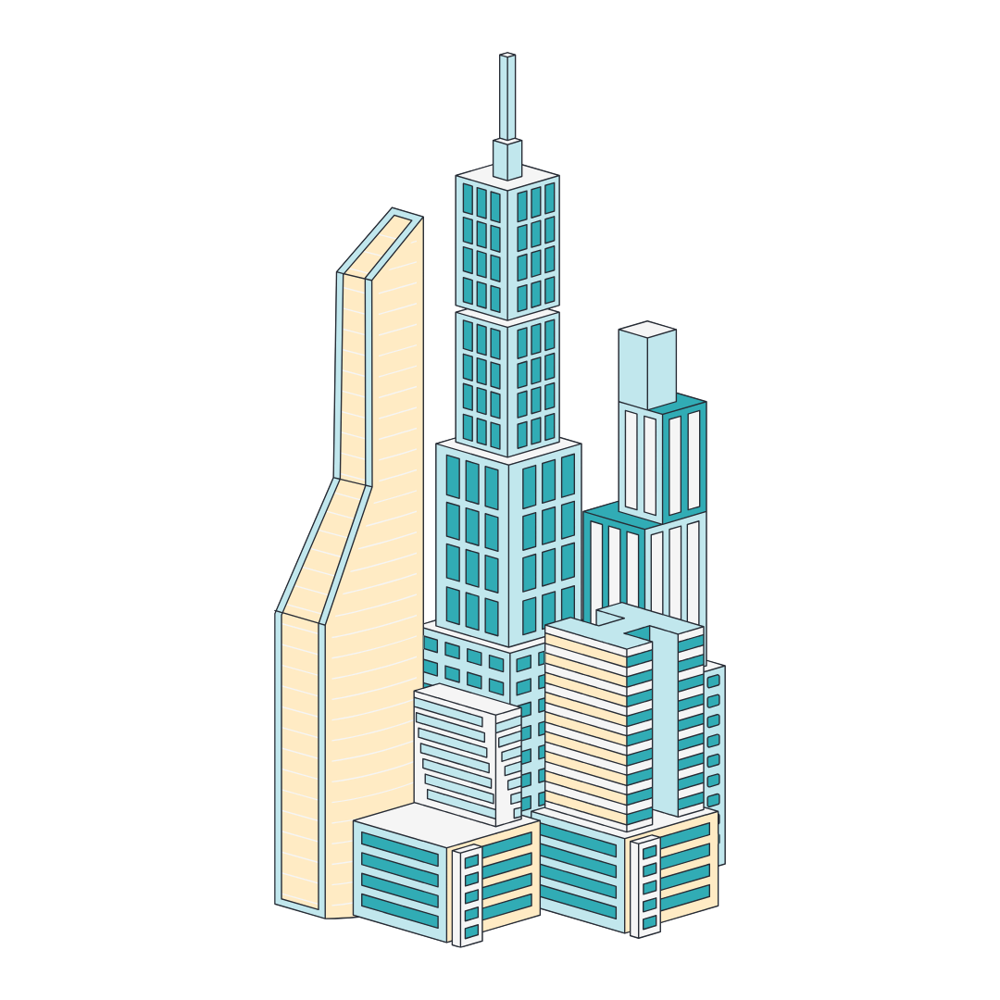

Digital Solutions For A Sustainable, Connected, and More Livable Future
WHAT ARE SMART CITIES?
With the fourth industrial revolution of the present, characterized by the Internet, digitalization, and the obscuring distinctions between physical and virtual worlds,
industries everywhere are disrupted (Majumdar, et al., 2018). Local government units have no exemption. To keep up with these times of rapid technological advancements,
cities in particular, implement various disruptive technologies in soft and hard infrastructures, hoping to improve the quality of life– from governance, economy, tourism, and
recreation, to social welfare. These are smart cities, cities that strategically capitalize on Information Communication Technology (ICT) aiming for success, efficiency, and
competitiveness in various socioeconomic aspects (Angelidou, 2014). Angelidou (2014) elaborates that the term “smart city” is considered ambiguous, as the preconceived notion
that technological implementation immediately makes a city smart and the biased usage of the word “smart” perpetuates misunderstanding and ambiguity of what smart cities
are. Even so, much literature shows that the smart city concept describes a myriad of heterogeneous solutions and city programs that employ and are mainly driven by various
technologies, especially ICTs which connect different entities to provide digital services, to reach a set of goals (Dameri, 2013).
FIRST, WHAT IS DISRUPTIVE TECHNOLOGY?
An invention classified as disruptive technology is one that fundamentally
changes how customers, markets, or companies function. Disruptive technologies have the potential to reshape economies, redefine
business models, and revolutionize the way we live and work. It can revolutionize various sectors, such as transportation,
healthcare, and communication. A great example of disruptive technology in today’s era includes ride-sharing applications,
GPS systems, e-commerce, and online news sources. Way back then, television, electricity, and cars were also classified as disruptive technology. (Smith, 2022)
HOW ARE DISRUPTIVE TECHNOLOGIES IMPLEMENTED IN SMART CITIES?
Now that we know what a smart city is, it is crucial to see how disruptive technologies interweave with the makings of a smart city.
According to the Department of Science and Technology (2021), the smart city, as an ecosystem,
provides various services that assure and enable information exchange, analysis, and statistics for the efficient usage of resources.
Technology facilitates just that. With technology, the exchange, analysis, and statistical-making of information are done efficiently.
And because information is shared and processed more quickly and efficiently, societal operations become more productive.
ICTs and digitalization, in particular, update old processes with new and convenient ways for consumers.
The DOST (2021) identifies sustainable, efficient, and productive economic opportunity, education, environmental quality and natural resource conservation, finance, governance, health, safety
and security, infrastructure, transportation, urban planning, and empowerment and inclusivity as indicators of a smarter city. Facilitated and supported by the effective implementation of disruptive technologies,
different sectors, and citizens can inch forward toward reaching these indicators, becoming smarter cities.
SMART CITY GROWTH FORECAST
Smart Cities in the Philippines and Current Initiatives
An article by Lamentillo (2022) discusses the prospects of smart cities in the Philippines.
Lamentillo reports that as a part of the ASEAN Smart Cities Network (ASCN) established by the ASEAN in 2018, the Philippines is committed to
achieving various smart city projects in Manila, Cebu, and Davao City. Lamentillo further points out that according to a study by the Philippine Institute
for Development Studies (PIDS), issues arise and hinder the strive toward smart city development, such as operational costs and inoperability.
Hence, she notes that LGUs must set up the necessary ICT infrastructure and systems to facilitate these smart city initiatives, however, even with LGU’s
existing ICT infrastructure, keeping their systems up to date with the constant advancement of technology can be quite expensive.


Baguio City, Philippines (Development Academy of Philippines, 2023)
Baguio City is a prime example of how innovative Smart City platforms can leverage data analytics and artificial intelligence to promote good governance.
With the help of upgraded infrastructure and a team of skilled staff with hardware and software development expertise, the initiative transformed various aspects surrounding Baguio's overall functionality.
By utilizing multiple data sources, AI-enabled cameras, and environmental sensors, informed decision-making, service, response, and resource allocation have become easier and more convenient than ever.
This has greatly improved tourism management, public safety, traffic control, disaster risk reduction, environmental preservation, and citizen welfare.
The Command Center, with its real-time data analysis, has enabled quick decision-making during complex situations and alerted not only authorities but also the public through round-the-clock monitoring of traffic conditions, public welfare, and environmental factors.
New Clark City (Bases Conversion and Development Authorities, 2022)
Lamentillo (2022) also reports that the Philippines’ first smart, resilient, and green metropolis is expected to be the Bases Conversion and Development Authority’s (BCDA) New Clark City, which aims to decongest Metro Manila and spur growth in Central Luzon and other provinces.
It is indicated that once completed, it will potentially house one million residents and provide jobs for about 600,000 Filipinos. Furthermore, it is reported that the BCDA has set up several anticipated impactful projects and programs in New Clark City, i.e. sustainability, ICT, estate management, transportation, tourism, and smart city technologies.
Makati City (Philippines and Asia Pacific, 2023)
CNN Philippines Staff published an article related to Makati City as a representative of the Philippines and Asia Pacific in 2023’s World Smart City Awards. It is stated that Makati City will compete against different cities like Sunderland (United Kingdom), Cascais(Portugal), Izmir(Turkey), Curitiba(Brazil), and Barranquilla(Colombia).
Makati Mayor Abby Binay claims that the city won recognition for using Internet of Things (IoT) gadgets to develop "behavioral transformation" and "data-driven policies" for its residents. IoT devices may share data in a cloud by networking and forming a network via the internet.
Features of Smart Cities
Baguio City, Philippines (Development Academy of the Philippines, 2023)
Smart Security System
Exemplifying the integration of advanced technologies, Baguio's Smart Security System utilizes AI-enabled cameras and environmental sensors,
culminating in an elevated standard of public safety through enhanced surveillance and risk mitigation measures (Development Academy of the Philippines, 2023).
Smart Emergency Response System
The bedrock of quick decision-making during emergencies is laid by Baguio's Smart Emergency Response System, which harnesses real-time
data analysis to orchestrate swift and effective responses, ensuring not only the safety of the public but also fostering an environment of resilience (Development Academy of the Philippines, 2023).
E-Government System and E-Business
Infrastructure
The intricate tapestry of governance is woven with digital threads as Baguio's E-Government System and E-Business Infrastructure contribute to the enhancement of
administrative processes and the facilitation of digital business operations, underscoring the city's commitment to technological advancement (Development Academy of the Philippines, 2023).
Smart Tourism
Embarking on the frontiers of innovation, Baguio's Smart Tourism initiatives utilize data analytics and artificial intelligence to reimagine and streamline tourism management,
marking a paradigm shift in how cities can harness technology for economic growth and visitor satisfaction (Development Academy of the Philippines, 2023).
Environment Management
The commitment to environmental preservation takes center stage as Baguio integrates technology into its Environment Management initiatives, utilizing real-time data and analytics
to monitor and safeguard the city's ecological well-being (Development Academy of the Philippines, 2023).
Smart Transportation
Revolutionizing the urban mobility landscape, Baguio's Smart Transportation systems deploy intelligent technologies for efficient traffic control, marking a departure from conventional approaches
and embracing a futuristic vision for urban mobility (Development Academy of the Philippines, 2023).
Smart Healthcare Monitoring System
The intersection of technology and healthcare is realized through Baguio's Smart Healthcare Monitoring System, exemplifying how digital innovations can be harnessed to monitor and manage healthcare services,
thereby contributing to the overall well-being of the city's residents (Development Academy of the Philippines, 2023)

CHALLENGES
Simeon (2022) recently wrote an article discussing the PIDS study, which identifies several obstacles that the Philippines faces in its efforts to develop smart cities. Despite the country's progress, various factors are hindering its success.
While local government units (LGUs) may own the fundamental ICT infrastructure, upgrading it requires a significant budget, which most LGUs can't afford in a short time.Consequently, they face difficulties in financing and implementing the necessary information and communication technology infrastructure, which impacts their ability to accurately gather data, keep up with technological advancements, ensure cybersecurity, and more.
Moving forward amidst challenges is never easy, and it's even harder to establish policies that ensure accessibility and trustworthiness for all. This task is not solely the responsibility of LGUs. It requires the support and assistance of the national government as well.
Challenges in Establishing Smart Cities in the Philippines
Transparency & Data Privacy
A pivotal challenge that surfaces in the intricate landscape of implementing smart cities in the Philippines revolves around the imperative need for transparency and the safeguarding of data privacy (Angelidou, 2014).
The expansive utilization of technology and the inherent data collection processes necessitate the establishment of robust policies and comprehensive frameworks to ensure the secure handling of citizens' information,
thereby fostering and maintaining a high level of public trust.
Lack of Capacity to Implement Smart City Initiatives
A formidable impediment confronting the Philippine smart city endeavors lies in the financial constraints faced by many local government units (LGUs), impeding their capacity to upgrade critical ICT infrastructure (Author, Year).
The scarcity of financial resources not only impedes the realization of smart city initiatives but also compromises the ability to acquire accurate data, keep abreast of rapid technological advancements, and fortify cybersecurity measures, thus posing a multifaceted challenge to the holistic success of these initiatives.
Social Inclusivity
Delving deeper into the complex tapestry of challenges, the pursuit of social inclusivity within the ambit of smart city initiatives emerges as a multifaceted conundrum (Author, Year). Achieving this inclusivity entails ensuring that the benefits of technological advancements reach all echelons of society, including marginalized communities.
Addressing the digital divide and ensuring universal accessibility stand as pivotal imperatives, underscoring the paramount importance of inclusivity in the overarching success of smart city programs.
SOURCES
Angelidou, M. (2014). Smart city policies: A spatial approach. Cities, 41, S3–S11. https://doi.org/10.1016/j.cities.2014.06.007
CNN Philippines Staff. (2023). Makati is PH's sole finalist at the World Smart Cities Awards. CNN Philippines. Retrieved from: https://www.cnnphilippines.com/news/2023/11/4/makati-world-smart-cities-finalist.html
Dameri, R. P. (2013). Searching for Smart City definition: a comprehensive proposal. International Journal of Computer and Technology, 11(5), 2544–2551. https://doi.org/10.24297/ijct.v11i5.1142
Department of Science and Technology – Philippine Council for Industry, Energy and
Emerging Technology Research and Development. (2021). DOST Framework for
Smart Sustainable Communities and Cities.
https://pcieerd.dost.gov.ph/images/pdf/2021/roadmaps/sectoral_roadmaps_division/etdd
DOST-Smarter-City-Framework_Draft-1-ao-8.4.2021-1.pdf
Development Academy of the Philippines. (2023, July 18). The Baguio Smart City Project: Advancing Data-Analytics-Driven Governance - DAP. DAP. https://coe-psp.dap.edu.ph/compendium-innovation/the-baguio-smart-city-project-advancing-data-analytics-driven-governance/
Gil, K.G. (2021, May 17). Advantages and disadvantages of smart cities. BBVA. https://www.bbva.ch/en/news/advantages-and-disadvantages-of-smart-cities/
Lamentillo, A. M. (2023, May 12). Smart Cities. Manila Bulletin. Retrieved December 6, 2023, from https://mb.com.ph/2023/5/11/smart-cities-1
Majumdar, D., Banerji, P. K., & Chakrabarti, S. (2018). Disruptive technology and disruptive innovation: ignore at your peril! Technology Analysis & Strategic Management, 30(11), 1247–1255. https://doi.org/10.1080/09537325.2018.1523384
Simeon, L. M. (2022, February 1). Challenges remain in developing smart cities in Philippines. Philstar.com. https://www.philstar.com/business/2022/02/02/2157878/challenges-remain-developing-smart-cities-philippines
Smith, T. (2022, April 2). Disruptive Technology: definition, example, and how to invest. Investopedia. https://www.investopedia.com/terms/d/disruptive-technology.asp
Department of Science and Technology. (2021). Smart Cities in the Philippines: An Ecosystem Framework. https://pcieerd.dost.gov.ph/images/pdf/2021/roadmaps/DOST%20Smarter%20City%20Framework_Final.pdf
Development Academy of the Philippines. (2023). Baguio Smart City: Leveraging Data Analytics and AI for Good Governance. https://coe-psp.dap.edu.ph/compendium-innovation/the-baguio-smart-city-project-advancing-data-analytics-driven-governance/
Simeon, J. (2022). Obstacles in Developing Smart Cities in the Philippines: Insights from PIDS Study. Journal of Urban Technology. https://www.pids.gov.ph/details/challenges-remain-in-developing-smart-cities-in-philippinesAngelidou, M. (2014). Defining smart city: A conceptual framework for classification. In Smart City 360° (pp. 9-24). Springer. https://www.researchgate.net/publication/271130694_Defining_Smart_City_A_Conceptual_Framework_Based_on_Keyword_Analysis